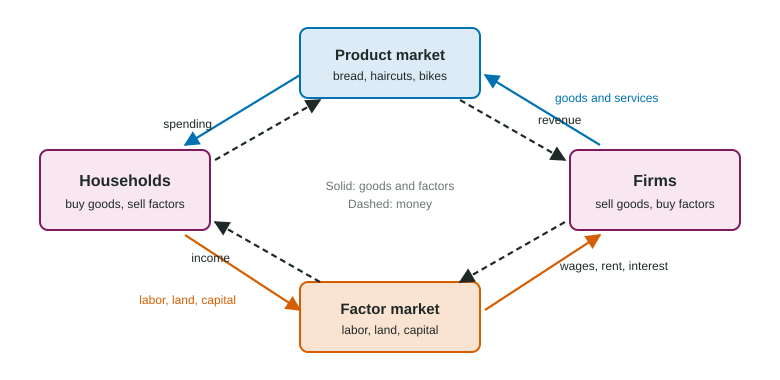

Every spring the bike shops in a college town put up "Now hiring: mechanics" signs. Riders pull their bikes out of storage and want them tuned, so the shops want more people who can tune them. That is the whole idea of this unit in one sentence: firms want workers because customers want what the workers make.
Two kinds of markets
So far you have studied product markets, where firms sell goods and services and households buy them. Firms also buy things: the labor, land and capital they need to produce. They buy these in factor markets (also called resource markets). Here the roles flip. Households and other owners of resources are the sellers, and firms are the buyers.

Each factor earns its own payment. Labor earns wages, land earns rent, capital earns interest, and entrepreneurship earns profit. Those payments are most households' income, which is why factor markets matter for who earns what.
Derived demand
A pizza shop does not want ovens or cooks for their own sake. It wants them because people buy pizza. The demand for a factor of production is a derived demand: it is derived from the demand for the product the factor helps make. If a new campus opens next door and pizza sales jump, the shop wants more cooks. If a rival opens and sales fall, it wants fewer.
That link runs through prices. More demand for pizza raises the price of pizza, so each cook's pizzas are worth more to the shop. To measure "worth more", economists use one number.
Marginal revenue product
The marginal revenue product (MRP) of a worker is the extra revenue the firm earns by hiring that worker. It has two parts: how much more output the worker adds (the marginal product, MP, from Topic 3.1) and how much revenue each extra unit adds (marginal revenue, MR, from Topic 3.5).
A firm that sells in a perfectly competitive market is a price taker, so its marginal revenue is the market price, and MRP = MP × P.
Worked example: MRP from a table. Hollin Bakery (invented) sells bread in a competitive market at $3 a loaf. With 1, 2, 3, 4 and 5 bakers it makes 20, 36, 48, 56 and 60 loaves a day.
- Marginal product. Subtract each total from the next: the bakers add 20, 16, 12, 8 and 4 loaves.
- Marginal revenue. A price taker gets $3 for every extra loaf, so MR = $3.
- MRP. Multiply: 20 × $3 = $60, then $48, $36, $24 and $12.
Each baker brings in less than the one before, because each adds fewer loaves (diminishing marginal returns from Topic 3.1).

A common slip is to multiply marginal revenue by the price. MRP is the worker's extra output times the extra revenue per unit, MP × MR. Write the formula first, then the numbers.
Why MRP slopes down, and why it is the demand for labor
MRP falls as a firm adds workers for one or two reasons:
- Marginal product falls. With a fixed kitchen and fixed ovens, each added worker has less equipment to use, so adds less output.
- Marginal revenue may fall. A firm that is the only seller of its product, or that has market power, must cut its price to sell more. Its MR is below its price and falls as output grows, so its MRP falls faster than a price taker's.
| Seller of the product | Marginal revenue | MRP |
|---|---|---|
| Price taker (perfect competition) | MR = P, the same for every unit | MP × P; falls only because MP falls |
| Price maker (for example, a monopoly) | MR below P, falling as output rises | MP × MR; falls because MP and MR both fall |
The MRP schedule tells the firm how much each added worker is worth. A firm will pay a worker up to that worker's MRP, so at any given wage the MRP curve shows how many workers it wants. That makes the MRP curve the firm's demand curve for labor. Topic 5.3 turns this into an exact hiring rule.
What raises or lowers MRP
Because MRP = MP × MR, anything that changes either part changes what a worker is worth:
- A higher product price (from more demand for the product) raises MR, so MRP rises at every quantity of labor.
- Better tools, training or technology raise MP, so MRP rises.
- A lower product price or less productive workers lower MRP.
On the exam, name every link: the demand for the product changes, so the product price changes, so MRP changes, so the number of workers firms want changes. Topic 5.2 shows what this does to a whole labor market.